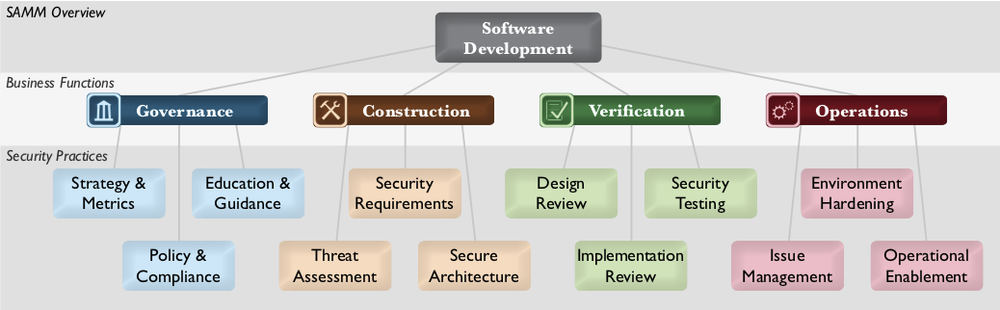
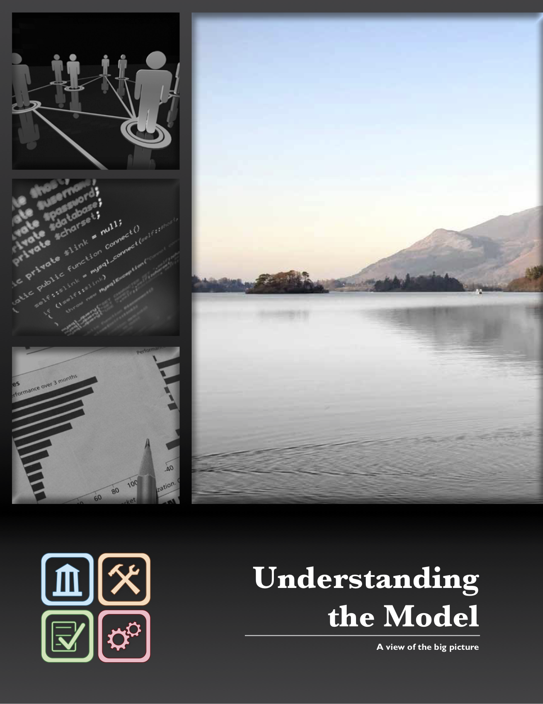
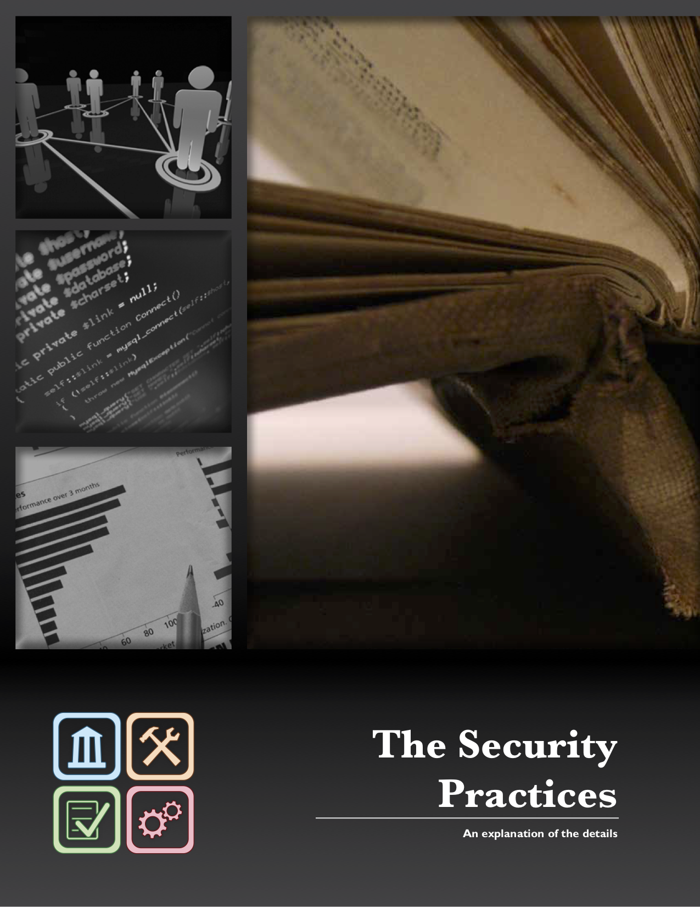
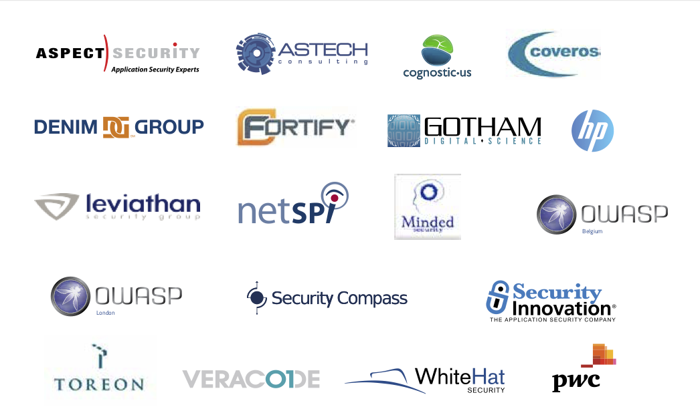

For the latest version and additional info, please see the project web site at
https://www.owasp.org/index.php/OWASP_SAMM_Project
This document was originally created through the OpenSAMM Project led by Pravir Chandra (chandra@owasp.org), an independent software security consultant. Creation of the first draft was made possible through funding from Fortify Software, Inc. Since the initial release of SAMM, this project has become part of the Open Web Application Security Project (OWASP). This document is currently maintained and updated through the OWASP SAMM Project led by Sebastien Deleersnyder, Bart De Win & Brian Glas. Thanks also go to many supporting organizations that are listed on back cover.
This work would not be possible without the support of many individual reviewers and experts that offered contributions and critical feedback.
• Fabio Arciniegas • Matt Bartoldus • Jonathan Carter • Darren Challey • Brian Chess • Justin Clarke • Dan Cornell • Michael Craigue • Dinis Cruz • Sebastien Deleersnyder • Justin Derry • Bart De Win • John Dickson • Alexios Fakos • David Fern • Brian Glas • Kuai Hinojosa • Jerry Hoff • Carsten Huth • Bruce Jenkins • Daniel Kefer • Yan Kravchenko • James McGovern • Matteo Meucci • Jeff Payne • Gunnar Peterson • Jeff Piper • Andy Steingruebl • John Steven • Chad Thunberg • Colin Watson • Jeff Williams • Steven Wierckx
This is an OWASP Project
#
OWASP is an international organization and the OWASP Foundation supports OWASP efforts around the world. OWASP is an open community dedicated to enabling organizations to conceive, develop, acquire, operate, and maintain applications that can be trusted. All of the OWASP tools, documents, forums, and chapters are free and open to anyone interested in improving application security. We advocate approaching application security as a people, process, and technology problem because the most effective approaches to application security include improvements in all of these areas. We can be found at https://www.owasp.org.
This work is licensed under the Creative Commons Attribution-Share Alike 4.0 License. To view a copy of this license, visit https://creativecommons.org/licenses/bysa/4.0/, send an email to info@creativecommons.org, or send a letter to Creative Commons, PO Box 1866, Mountain View, CA 94042. ###
The Software Assurance Maturity Model (SAMM) is an open framework to help organizations formulate and implement a strategy for software security that is tailored to the specific risks facing the organization. The resources provided by SAMM will aid in:
✦ Evaluating an organization’s existing software security practices.
✦ Building a balanced software security assurance program in well-defined iterations.
✦ Demonstrating concrete improvements to a security assurance program.
✦ Defining and measuring security-related activities throughout an organization.
Version 1.1 of SAMM expanded and restructured its predecessor into four complementary resources: this document that describes the core SAMM model, the How-To Guide that explains how to apply the model, the Quick Start Guide to help accelerate learning and adoption, and the toolbox that provides simple automation for data collection, metrics, and graphs. Furthermore, a number of elements have been renamed to better represent their purpose.
Version 1.5 of SAMM incorporates a refinement of the scoring model to provide more granularity to the scoring in an assessment. Now an organization will get credit for all the related work done in a practice rather than having the base number held at the highest completed maturity level. The updated scoring model has been designed to help SAMM assessors and organizations avoid the awkward discussion on whether to mark an answer yes or no when it is honestly something in between, and to show incremental improvements.
SAMM was defined with flexibility in mind such that it can be utilized by small, medium, and large organizations using any style of development. Additionally, this model can be applied organization-wide, for a single line-of-business, or even for an individual project. Beyond these traits, SAMM was built on the following principles:
✦ An organization’s behavior changes slowly over time - A successful software security program should be specified in small iterations that deliver tangible assurance gains while incrementally working toward long-term goals.
✦ There is no single recipe that works for all organizations - A software security framework must be flexible and allow organizations to tailor their choices based on their risk tolerance and the way in which they build and use software.
✦ Guidance related to security activities must be prescriptive - All the steps in building and assessing an assurance program should be simple, well-defined, and measurable. This model also provides roadmap templates for common types of organizations.
The foundation of the model is built upon the core business functions of software development with security practices tied to each (see diagram below). The building blocks of the model are the three maturity levels defined for each of the twelve security practices. These define a wide variety of activities in which an organization could engage to reduce security risks and increase software assurance. Additional details are included to measure successful activity performance, understand the associated assurance benefits, estimate personnel and other costs.
As an open project, SAMM content shall always remain vendor-neutral and freely available for all to use.# # Contents
Executive Summary 3 #### Understanding the model 6 Business Functions 8
Governance 10
Construction 12
Verification 14
Operations 16
Assessment worksheets 18
Strategy & Metrics 24
Policy & Compliance 28
Education & Guidance 32
Threat Assessment 36
Security Requirements 40
SecureArchitecture 44
Design Review 48
Implementation Review 52
SecurityTesting 56
Issue Management 60
Environment Hardening 64
Operational Enablement 68
# ######SAMM is built upon a collection of security practices that are tied back into the core business functions involved in software development. This section introduces those business functions and the corresponding security practices for each. After covering the high-level framework, the maturity levels for each security practice are also discussed briefly in order to paint a picture of how each can be iteratively improved over time.
At the highest level, SAMM defines four critical business functions. Each business function is a category of activities related to the nuts-and-bolts of software development, or stated another way, any organization involved with software development must fulfill each of these business functions to some degree.
For each business function, SAMM defines three security practices. Each security practice is an area of security-related activities that build assurance for the related business function. There are twelve security practices that are the independent silos for improvement that map to the four business functions of software development.
For each security practice, SAMM defines three maturity levels as objectives. Each level within a security practice is characterized by a successively more sophisticated objective defined by specific activities, and more stringent success metrics than the previous level. Additionally, each security practice can be improved independently, though related activities can lead to optimizations.
Governance is centered on the processes and activities related to how an organization manages overall software development activities. More specifically, this includes concerns that impact cross-functional groups involved in development, as well as business processes that are established at the organization level.
Strategy & Metrics involves the overall strategic direction of the software assurance program and instrumentation of processes and activities to collect metrics about an or- ganization’s security posture.
Policy & Compliance involves setting up a security, compliance, and audit control framework throughout an organization to achieve increased assurance in software under contruction and in operation.
Education & Guidance involves increasing security knowledge amongst personnel in software development through training and guidance on security topics relevant to individual job functions.
…more on page 10
Construction concerns the processes and activities related to how an organization defines goals and creates software within development projects. In general, this will include product management, requirements gathering, high-level architecture specification, detailed design, and implementation.
Threat Assessment involves accurately identifying and characterizing potential attacks upon an organization’s software in order to better understand the risks and facilitate risk management.
Security Requirements involves promoting the inclusion of security-related requirements during the software development process in order to specify correct functional-ity from inception.
Secure Architecture involves bolstering the design process with activities to promote secure-by-default designs and control over technologies and frameworks upon which software is built.
…more on page 12
Verification is focused on the processes and activities related to how an organization checks, and tests artifacts produced throughout software development. This typically includes quality assurance work such as testing, but it can also include other review and evaluation activities.
Design Review involves inspection of the artifacts created from the design process to ensure provision of adequate security mechanisms, and adherence to an organization’s expectations for security.
Implementation Review involves assessment of an organization’s source code to aid vulnerability discovery and related mitigation activities as well as establish a baseline for secure coding expectations.
Security Testing involves testing the organization’s software in its runtime environment, in order to both discover vulnerabilities, and establish a minimum standard for software releases.
…more on page 14
Operations entails the processes and activities related to how an organization manages software releases that has been created. This can involve shipping products to end users, deploying products to internal or external hosts, and normal operations of software in the runtime environment.
Issue Management involves establishing consistent processes for managing internal and external vulnerability reports to limit exposure and gather data to enhance the security assurance program.
Environment Hardening involves implementing controls for the operating environment surrounding an organization’s software to bolster the security posture of applications that have been deployed.
Operational Enablement involves identifying and capturing security-relevant information needed by an operator to properly configure, deploy, and run an organization’s software.
…more on page 16
Each of the twelve security practices has three defined maturity levels and an implicit starting point at zero. The details for each level differs between the practices, but they generally represent:
Assurance programs might not always consist of activities that neatly fall on a boundary between maturity levels, e.g. an organization that assesses to a Level 1 for a given practice might also have additional activities in place but not such that Level 2 is completed. Prior to v1.5, the organization’s score should be annotated with a “+” symbol to indicate there’s additional assurances in place beyond those indicated by the Level obtained. For example, an organization that is performing all Level 1 activities for operational enablement as well as one Level 2 or 3 activity would be assigned a “1+” score. Likewise, an organization performing all activities for a security practice, including some beyond the scope of SAMM, would be given a “3+” score.
The scoring model has changed in v1.5 to provide more granularity to the scoring in an assessment. Now an organization will get credit for different levels of work they have done within a practice rather than having the base number held at the highest completed maturity level. The scoring is now fractional to two decimal places for each practice and a single decimal for an answer. Questions have also been changed from Yes/No to four options that represent different levels of coverage or maturity. This change will assist practitioners completing SAMM assessments with the inevitable debate whether to mark an answer yes or no when it is honestly something in between.
The primary reason for the scoring change was to ensure organizations would receive full credit for their work in software security and to make it easier to show improvements in scoring when activities and programs grow and mature. The hope is this change will bring us closer to understanding what works in different scenarios for different organizations to benefit all.
The toolbox spreadsheet has been updated to reflect more context aware answers for each of the questions in the assessment. The formulas in the toolbox will also average the answers to calculate the score for each practice, a roll up average for each business function, and an overall score. The toolbox also has updated scorecard graphics that help represent the current score and can help show improvements to the program as the answers to the questions change. The worksheets later in this document are also updated to align with the new scoring model.
The Strategy & Metrics (SM) practice is focused on establishing the framework within an organization for a software security assurance program. This is the most fundamental step in defining security goals in a way that’s both measurable and aligned with the organization’s real business risk.
By starting with lightweight risk profiles, an organization grows into more advanced risk classification schemes for application and data assets over time. With additional insight on relative risk measures, an organization can tune its project-level security goals and develop granular roadmaps to make the security program more efficient. At the more advanced levels within this practice, an organization draws upon many data sources, both internal and external, to collect metrics and qualitative feedback on the security program. This allows fine tuning of cost outlay versus the realized benefit at the program level.
The Policy & Compliance (PC) practice is focused on understanding and meeting external legal and regulatory requirements while also driving internal security standards to ensure compliance in a way that’s aligned with the business purpose of the organization.
A driving theme for improvement within this practice is focus on project-level audits that gather information about the organization’s behavior in order to check that expectations are being met. By introducing routine audits that start out lightweight and grow in depth over time, organizational change is achieved iteratively.
In a sophisticated form, provision of this practice entails organization-wide understanding of both internal standards and external compliance drivers while also maintaining low-latency checkpoints with project teams to ensure no project is operating outside expectations without visibility.
The Education & Guidance (EG) practice is focused on arming personnel involved in the software lifecycle with knowledge and resources to design, develop, and deploy secure software. With improved access to information, project teams will be better able to proactively identify and mitigate specific security risks that apply to their organization.
One major theme for improvement across the objectives is providing training for employees, either through instructor-led sessions or computer-based modules. As an organization progresses, a broad base of training is built by starting with developers and moving to other roles throughout the organization, culminating with the addition of role-based certification to ensure comprehension of the material.
In addition to training, this practice also requires pulling security-relevant information into guidelines that serve as reference information to staff. This builds a foundation for establishing a baseline expectation for security practices in your organization, and later allows for incremental improvement once usage of the guidelines has been adopted.
…more on page 24
| SM 1 | SM 2 | SM 3 | |
|---|---|---|---|
| Objective: | Establish a unified strategic roadmap for software security within the organization. | Measure relative value of data and software assets and choose risk tolerance. | Align security expenditure with relevant business indicators and asset value. |
| Activities: | A. Estimate overall business risk profile B. Build and maintain assurance program roadmap | A. Classify data and applications based on business risk B. Establish and measure per–classification security goals | A. Conduct periodic industry-wide cost comparisons B. Collect metrics for historic security spend |
…more on page 28
| PC 1 | PC 2 | PC 3 | |
|---|---|---|---|
| Objective: | Understand relevant governance and compliance drivers to the organization. | Establish security and compliance baseline and understand per-project risks. | Require compliance and measure projects against organization-wide policies and standards. |
| Activities: | A. Identify and monitor external compliance drivers B. Build and maintain compliance guidelines | A. Build policies and standards for security and compliance B. Establish project audit practice | A. Create compliance gates for projects B. Adopt solution for audit data collection |
…more on page 32
| EG 1 | EG 2 | EG 3 | |
|---|---|---|---|
| Objective: | Offer development staff access to resources around the topics of secure programming and deployment. | Educate all personnel in the software lifecycle with role-specific guidance on secure development. | Mandate comprehensive security training and certify personnel for baseline knowledge. |
| Activities: | A. Conduct technical security awareness training B. Build and maintain technical guidelines | A. Conduct role-specific application security training B. Utilize security coaches to enhance project teams | A. Create formal application security support portal B. Establish role-based examination/certification |
The Threat Assessment (TA) practice is centered on identification and understanding the project-level risks based on the functionality of the software being developed and characteristics of the runtime environment. From details about threats and likely attacks against each project, the organization as a whole operates more effectively through better decisions about prioritization of initiatives for security. Additionally, decisions for risk acceptance are more informed, therefore better aligned to the business.
By starting with simple threat models and building to more detailed methods of threat analysis and weighting, an organization improves over time. Ultimately, a sophisticated organization would maintain this information in a way that is tightly coupled to the compensating factors and pass-through risks from external entities. This provides greater breadth of understanding for potential downstream impacts from security issues while keeping a close watch on the organization’s current performance against known threats.
The Security Requirements (SR) practice is focused on proactively specifying the expected behavior of software with respect to security. Through addition of analysis activities at the project level, security requirements are initially gathered based on the high-level business purpose of the software. As an orga-nization advances, more advanced techniques are used such as access control specifications to discover new security requirements that may not have been initially obvious to development.
In a sophisticated form, provision of this practice also entails pushing the security requirements of the organization into its relationships with suppliers and then auditing projects to ensure all are adhering to expectations with regard to specification of security requirements.
The Secure Architecture (SA) practice is focused on proactive steps for an organization to design and build secure software by default. By enhancing the software design process with reusable services and components, the overall security risk from software development can be dramatically reduced.
Beginning from simple recommendations about software frameworks and explicit consideration of secure design principles, an organization evolves toward consistently using design patterns for security functionality. Also, activities encourage project teams to increased utilization of centralized security services and infrastructure.
As an organization evolves over time, sophisticated provision of this practice entails organizations building reference platforms to cover the generic types of software they build. These serve as frameworks upon which developers can build custom software with lower risk of vulnerabilities.
…more on page 36
| TA 1 | TA 2 | TA 3 | |
|---|---|---|---|
| Objective: | Identify and understand high-level threats to the organization and individual projects. | Increase accuracy of threat assessment and improve granularity of per-project understanding. | Concretely align compensating controls to each threat against internal and third-party software. |
| Activities: | A. Build and maintain application-specific threat models B. Develop attacker profile from software architecture | A. Build and maintain abuse-case models per project B. Adopt a weighting system for measurement of threats | A. Explicitly evaluate risk from third-party components B. Elaborate threat models with compensating controls |
…more on page 40
| SR 1 | SR 2 | SR 3 | |
|---|---|---|---|
| Objective: | Consider security explicitly during the software requirements process. | Increase granularity of security requirements derived from business logic and known risks. | Mandate security requirements process for all software projects and third-party dependencies. |
| Activities: | A. Derive security requirements from business functionality B. Evaluate security and compliance guidance for requirements | A. Build an access control matrix for resources and capabilities B. Specify security requirements based on known risks | A. Build security requirements into supplier agreements B. Expand audit program for security requirements |
…more on page 44
| SA 1 | SA 2 | SA 3 | |
|---|---|---|---|
| Objective: | Insert consideration of proactive security guidance into the software design process. | Direct the software design process toward known- secure services and secure-by-default designs. | Formally control the software design process and validate utilization of secure components. |
| Activities: | A. Maintain list of recommended software frameworks B. Explicitly apply security principles to design | A. . Identify and promote security services and infrastructure B. Identify security design patterns from architecture | A. Establish formal reference architectures and platforms B. Validate usage of frameworks, patterns, and platforms |
The Design Review (DR) practice is focused on assessment of software design and architecture for security-related problems. This allows an organization to detect architecture-level issues early in software development and thereby avoid potentially large costs from refactoring later due to security concerns.
Beginning with lightweight activities to build understanding of the security-relevant details about an architecture, an organization evolves toward more formal inspection methods that verify completeness in provision of security mechanisms. At the organization level, design review services are built and offered to stakeholders.
In a sophisticated form, provision of this practice involves detailed, data-level inspection of designs, and enforcement of baseline expectations for conducting design assessments and reviewing findings before releases are accepted.
The Implementation Review (IR) practice is focused on inspection of software at the source code and configuration level in order to find security vulnerabilities. Code-level vulnerabilities are generally simple to understand conceptually, but even informed developers can easily make mistakes that leave software open to potential compromise.
To begin, an organization uses lightweight checklists and for efficiency, only inspects the most critical software modules. However, as an organization evolves it uses automation technology to dramatically improve coverage and efficacy of implementation review activities.
Sophisticated provision of this practice involves deeper integration of implementation review into the development process to enable project teams to find problems earlier. This also enables organizations to better audit and set expectations for implementation review findings before releases can be made.
The Security Testing (ST) practice is focused on inspection of software in the runtime environment in order to find security problems. These testing activities bolster the assurance case for software by checking it in the same context in which it is expected to run, thus making visible operational misconfigurations or errors in business logic that are difficult to otherwise find.
Starting with penetration testing and high-level test cases based on the functionality of software, an organization evolves toward usage of security testing automation to cover the wide variety of test cases that might demonstrate a vulnerability in the system.
In an advanced form, provision of this practice involves customization of testing automation to build a battery of security tests covering application-specific concerns in detail. With additional visibility at the organization level, security testing enables organizations to set minimum expectations for security testing results before a project release is accepted.
…more on page 48
| DR1 | DR2 | DR3 | |
|---|---|---|---|
| Objective: | Support ad-hoc reviews of software design to ensure baseline mitigations for known risks. | Offer assessment services to review software design against comprehensive best practices for security. | Require assessments and validate artifacts to develop detailed understanding of protection mechanisms. |
| Activities: | A. Identify software attack surface B. Analyze design against known security requirements | A. Inspect for complete provision of security mechanisms B. Deploy design review service for project teams | A. Develop data-flow diagrams for sensitive resources B. Establish release gates for design review |
…more on page 52
| IR 1 | IR 2 | IR 3 | |
|---|---|---|---|
| Objective: | Opportunistically find basic code-level vulnerabilities and other high-risk security issues. | Make implementation review during development more accurate and efficient through automation. | Mandate comprehensive implementation review process to discover language-level and application-specific risks. |
| Activities | A. Create review checklists from known security requirements B. Perform point-review of high-risk code | A. Utilize automated code analysis tools B. Integrate code analysis into development process | A. Customize code analysis for application-specific concerns B. Establish release gates for code review |
…more on page 56
| ST1 | ST2 | ST3 | |
|---|---|---|---|
| Objective: | Establish process to perform basic security tests based on implementation and software requirements. | Make security testing during development more complete and efficient through automation. | Require application- specific security testing to ensure baseline security before deployment. |
| Activities: | A. Derive test cases from known security requirements B. Conduct penetration testing on software releases | A. Utilize automated security testing tools B. Integrate security testing into development process | A. Employ application-specific security testing automation B. Establish release gates for security testing |
The Issue Management (IM) practice is focused on the processes within an organization with respect to handling issue reports and operational incidents. By having these processes in place, an organization’s projects will have consistent expectations and increased efficiency for handling these events, rather than chaotic and uninformed responses.
Starting from lightweight assignment of roles in the event of an incident, an organization grows into a more formal incident response process that ensures visibility and tracking on issues that occur. Communications are also improved to improve overall understanding of the processes.
In an advanced form, issue management involves thorough dissecting of incidents and issue reports to collect detailed metrics and other root-cause information to feedback into the organization’s downstream behavior.
The Environment Hardening (EH) practice is focused on building assurance for the runtime environment that hosts the organization’s software. Since secure operation of an application can be deteriorated by problems in external components, hardening this underlying infrastructure directly improves the overall security posture of the software.
By starting with simple tracking and distributing of information about the operating environment to keep development teams better informed, an organization evolves to scalable methods for managing deployment of security patches and instrumenting the operating environment with early-warning de- tectors for potential security issues before damage is done.
As an organization advances, the operating environment is further reviewed and hardened by deployment of protection tools to add layers of defenses and safety nets to limit damage in case any vulnerabilities are exploited.
The Operational Enablement (OE) practice is focused on gathering security critical information from the project teams building software and communicating it to the users and operators of the software. Without this information, even the most securely designed software carries undue risks since important security characteristics and choices will not be known at a deployment site.
Starting from lightweight documentation to capture the most important details for users and operators, an organization evolves toward building complete operational security guides that are delivered with each release.
In an advanced form, operational enablement also entails organization-level checks against individual project teams to ensure that information is being captured and shared according to expectations.
…more on page 60
| IM 1 | IM 2 | IM 3 | |
|---|---|---|---|
| Objective: | Understand high-level plan for responding to issue reports or incidents. | Elaborate expectations for response process to improve consistency and communications. | Improve analysis and data gathering within response process for feedback into proactive planning. |
| Activities: | A. Identify point of contact for security issues B. Create informal security response team(s) | A. Establish consistent issue reponse process B. Adopt a security issue disclosure process | A. Conduct root cause analysis for for issues B. Collect per-issue metrics |
…more on page 64
| EH1 | EH2 | EH3 | |
|---|---|---|---|
| Objective: | Understand baseline operational environment for applications and software components. | Improve confidence in application operations by hardening the operating environment. | Validate application health and status of operational environment against known best practices. |
| Activities: | A. Maintain operational environment specification B. Identify and install critical security upgrades and patches | A. Establish routine patch management process B. Monitor baseline environment configuration status | A. Identify and deploy relevant operations protection tools B. Expand audit program for environment configuration |
…more on page 68
| OE1 | OE2 | OE3 | |
|---|---|---|---|
| Objective: | Enable communications between development teams and operators for critical security-relevant data. | Improve expectations for continuous secure operations through provision of detailed procedures. | Mandate communication of security information and validate artifacts for completeness. |
| Activities: | A. Capture critical security information for deployment B. Document procedures for typical application alerts | A. Create per-release change management procedures B. Maintain formal operational security guides | A. Expand audit program for operational information B. Perform code signing for application components |
| SCORE | 0.0 | 0.2 | 0.5 | 1.0 |
| SM1 | ||||
| ✦Is there a software security assurance program in place? | NO | <1 YR | >1 YR | MATURE |
| ✦ Are development staff aware of future plans for the assurance program? | NO | SOME | HALF | MOST |
| ✦Do the business stakeholders understand your organization’s risk profile? | NO | SOME | HALF | MOST |
| SM2 | ||||
| ✦ Are many of your applications and resources categorized by risk? | NO | SOME | HALF | MOST |
| ✦ Are risk ratings used to tailor the required assurance activities? | NO | SOME | HALF | MOST |
| ✦Does the organization know about what’s required based on risk ratings? | NO | SOME | HALF | MOST |
| SM3 | ||||
| ✦Is per-project data for the cost of assurance activities collected? | NO | SOME | HALF | MOST |
| ✦Does your organization regularly compare your security spend with that of other organizations? | NO | ONCE | EVERY 2-3 YRS | ANNUALLY |
| SCORE | 0.0 | 0.2 | 0.5 | 1.0 |
| PC1 | ||||
| ✦Do project stakeholders know their project’s compliance status? | NO | SOME | HALF | MOST |
| ✦ Are compliance requirements specifically considered by project teams? | NO | NOT APPLY | AD-HOC | YES |
| PC2 | ||||
| ✦ Does the organization utilize a set of policies and standards to control software development? | NO | PER TEAM | ORG WIDE | INTEGRATED PROCESS |
| ✦ Are project teams able to request an audit for compliance with policies and standards? | NO | SOME | HALF | MOST |
| PC3 | ||||
| ✦Are projects periodically audited to ensure a baseline of compliance with policies and standards? | NO | SOME | HALF | MOST |
| ✦Does the organization systematically use audits to collect and control compliance evidence? | NO | BUS AREA | ORG WIDE | ORG WIDE & REQUIRED |
| SCORE | 0.0 | 0.2 | 0.5 | 1.0 |
| EG1 | ||||
| ✦Have developers been given high-level security awareness training? | NO | ONCE | EVERY 2-3 YEARS | ANNUALLY |
| ✦Does each project team understand where to find secure development best-practices and guidance? | NO | SOME | HALF | MOST |
| EG2 | ||||
| ✦Are those involved in the development process given role-specific security training and guidance? | NO | SOME | HALF | MOST |
| ✦ Are stakeholders able to pull in security coaches for use on projects? | NO | SOME | HALF | MOST |
| EG3 | ||||
| ✦Is security-related guidance centrally controlled and consistently distributed throughout the organization? | NO | PER TEAM | ORG WIDE | INTEGRATED PROCESS |
| ✦ Are developers tested to ensure a baseline skill- set for secure development practices? | NO | ONCE | EVERY 2-3 YEARS | ANNUALLY |
| SCORE | 0.0 | 0.2 | 0.5 | 1.0 |
| TA1 | ||||
| ✦Do projects in your organization consider and document likely threats? | NO | SOME | HALF | MOST |
| ✦Does your organization understand and document the types of attackers it faces? | NO | SOME | HALF | MOST |
| TA2 | ||||
| ✦Do project teams regularly analyze functional requirements for likely abuses? | NO | SOME | HALF | MOST |
| ✦Do project teams use a method of rating threats for relative comparison? | NO | SOME | HALF | MOST |
| ✦Are stakeholders aware of relevant threats and ratings? | NO | SOME | HALF | MOST |
| TA3 | ||||
| ✦Do project teams specifically consider risk from external software? | NO | SOME | HALF | MOST |
| ✦ Are the majority of the protection mechanisms and controls captured and mapped back to threats? | NO | SOME | HALF | MOST |
| SCORE | 0.0 | 0.2 | 0.5 | 1.0 |
| SR1 | ||||
| ✦Do project teams specify security requirements during development? | NO | SOME | HALF | MOST |
| ✦Do project teams pull requirements from best practices and compliance guidance? | NO | PER TEAM | ORG WIDE | INTEGRATED PROCESS |
| SR2 | ||||
| ✦Do stakeholders review access control matrices for relevant projects? | ||||
| NO | SOME | HALF | MOST | |
| ✦Do project teams specify requirements based on feedback from other security activities? | NO | SOME | HALF | MOST |
| SR3 | ||||
| ✦Do stakeholders review vendor agreements for security requirements? | NO | SOME | HALF | MOST |
| ✦ Are audits performed against the security requirements specified by project teams? | NO | ONCE | EVERY 2-3 YEARS | ANNUALLY |
| SCORE | 0.0 | 0.2 | 0.5 | 1.0 |
| SA1 | ||||
| ✦ Are project teams provided with a list of recommended third-party components? | NO | PER TEAM | ORG WIDE | INTEGRATED PROCESS |
| ✦ Are project teams aware of secure design principles and do they apply them consistently? | NO | SOME | HALF | MOST |
| SA2 | ||||
| ✦Do you advertise shared security services with guidance for project teams? | NO | BUS AREA | ORG WIDE | ORG WIDE & REQUIRED |
| ✦ Are project teams provided with prescriptive design patterns based on their application architecture? | NO | PER TEAM | ORG WIDE | INTEGRATED PROCESS |
| SA3 | ||||
| ✦Do project teams build software from centrally- controlled platforms and frameworks? | NO | SOME | HALF | MOST |
| ✦ Are project teams audited for the use of secure architecture components? | NO | ONCE | EVERY 2-3 YEARS | ANNUALLY |
| SCORE | 0.0 | 0.2 | 0.5 | 1.0 |
| DR1 | ||||
| ✦Do project teams document the attack perimeter of software designs? | NO | SOME | HALF | MOST |
| ✦ Do project teams check software designs against known security risks? | NO | SOME | HALF | MOST |
| DR2 | ||||
| ✦Do project teams specifically analyze design elements for security mechanisms? | NO | SOME | HALF | MOST |
| ✦ Are project stakeholders aware of how to obtain a formal secure design review? | NO | SOME | HALF | MOST |
| DR3 | ||||
| ✦Does the secure design review process incorporate detailed data-level analysis? | NO | SOME | HALF | MOST |
| ✦Does a minimum security baseline exist for secure design review results? | NO | PER TEAM | ORG WIDE | INTEGRATED PROCESS |
| SCORE | 0.0 | 0.2 | 0.5 | 1.0 |
| IR1 | ||||
| ✦Do project teams have review checklists based on common security related problems? | NO | BUS AREA | ORG WIDE | ORG WIDE & REQUIRED |
| ✦Do project teams review selected high-risk code? | NO | SOME | HALF | MOST |
| IR2 | ||||
| ✦Can project teams access automated code analysis tools to find security problems? | NO | PER TEAM | ORG WIDE | INTEGRATED PROCESS |
| ✦Do stakeholders consistently review results from code reviews? | NO | SOME | HALF | MOST |
| IR3 | ||||
| ✦Do project teams utilize automation to check code against application-specific coding standards? | NO | BUS AREA | ORG WIDE | ORG WIDE & REQUIRED |
| ✦Does a minimum security baseline exist for code review results? | NO | PER TEAM | ORG WIDE | INTEGRATED PROCESS |
| SCORE | 0.0 | 0.2 | 0.5 | 1.0 |
| ST1 | ||||
| ✦Do projects specify security testing based on defined security requirements? | NO | SOME | HALF | MOST |
| ✦Is penetration testing performed on high risk projects prior to release? | NO | SOME | HALF | MOST |
| ✦Are stakeholders aware of the security test status prior to release? | NO | SOME | HALF | MOST |
| ST2 | ||||
| ✦Do projects use automation to evaluate security test cases? | NO | SOME | HALF | MOST |
| ✦Do projects follow a consistent process to evaluate and report on security tests to stakeholders? | NO | SOME | HALF | MOST |
| ST3 | ||||
| ✦Are security test cases comprehensively generated for application-specific logic? | NO | SOME | HALF | MOST |
| ✦Does a minimum security baseline exist for security testing? | NO | PER TEAM | ORG WIDE | INTEGRATED PROCESS |
| SCORE | 0.0 | 0.2 | 0.5 | 1.0 |
| IM1 | ||||
| ✦Do projects have a point of contact for security issues or incidents? | NO | SOME | HALF | MOST |
| ✦Does your organization have an assigned security response team? | NO | <1 YEAR | >1 YEAR | MATURE |
| ✦Are project teams aware of their security point(s) of contact and response team(s)? | NO | SOME | HALF | MOST |
| IM2 | ||||
| ✦Does the organization utilize a consistent process for incident reporting and handling? | NO | BUS AREA | ORG WIDE | ORG WIDE & REQUIRED |
| ✦Are project stakeholders aware of relevant security disclosures related to their software projects? | NO | SOME | HALF | MOST |
| IM3 | ||||
| ✦Are incidents inspected for root causes to generate further recommendations? | NO | SOME | HALF | MOST |
| ✦Do projects consistently collect and report data and metrics related to incidents? | NO | SOME | HALF | MOST |
| SCORE | 0.0 | 0.2 | 0.5 | 1.0 |
| EH1 | ||||
| ✦Do projects document operational environment security requirements? | NO | SOME | HALF | MOST |
| ✦Do projects check for security updates to third-party software components? | NO | SOME | HALF | MOST |
| EH2 | ||||
| ✦Is a consistent process used to apply upgrades and patches to critical dependencies? | NO | BUS AREA | ORG WIDE | ORG WIDE & REQUIRED |
| ✦Do projects leverage automation to check application and environment health? | NO | SOME | HALF | MOST |
| EH3 | ||||
| ✦ Are stakeholders aware of options for additional tools to protect software while running in operations? | NO | PER TEAM | ORG WIDE | INTEGRATED PROCESS |
| ✦Does a minimum security baseline exist for environment health (versioning, patching, etc)? | NO | BUS AREA | ORG WIDE | ORG WIDE & REQUIRED |
| SCORE | 0.0 | 0.2 | 0.5 | 1.0 |
| OE1 | ||||
| ✦Are security notes delivered with each software release? | NO | SOME | HALF | MOST |
| ✦Are security-related alerts and error conditions documented on a per-project basis? | NO | SOME | HALF | MOST |
| OE2 | ||||
| ✦Do projects utilize a change management process that’s well understood? | NO | SOME | HALF | MOST |
| ✦Do project teams deliver an operational security guide with each product release? | NO | SOME | HALF | MOST |
| OE3 | ||||
| ✦Are project releases audited for appropriate operational security information? | NO | ONCE | EVERY 2-3 YRS | ANNUALLY |
| ✦Is code signing routinely performed on software components using a consistent process? | NO | NOT APPLY | AD-HOC | YES |
# # This section defines the building blocks of SAMM, the maturity levels under each security practice. For each practice, the three levels are covered in a summary table. Following that, the description for each level includes detailed explanations of the required activities, results an organization can expect from attaining the level, success metrics to gauge performance, required ongoing personnel investment, and additional associated costs.
| SM1 | SM2 | SM3 | ||
|---|---|---|---|---|
| Objective | Establish unified strategic roadmap for software security within the organization. | Measure relative value of data and software assets and choose risk tolerance. | Align security expenditure with relevant business indicators and asset value. | |
| Activities | A. Estimate overall business risk profile B. Build and maintain assurance program roadmap | A. Classify data and applications based on business risk B. Establish and measure per- classification security goals | A. Conduct periodic industry-wide cost comparisons B. Collect metrics for historic security spend | |
| Assessment | ✦Is there a software security assurance program in place? ✦Are development staff aware of future plans for the assurance program? ✦Do the business stakeholders understand your organization’s risk profile? | ✦Are many of your applications and resources categorized by risk? ✦Are risk ratings used to tailor the required assurance activities? ✦Does the organization know about what’s required based on risk ratings? | ✦Is per-project data for the cost of assurance activities collected? ✦Does your organization regularly compare your security spend with that of other organizations? | |
| Results | ✦Concrete list of the most critical business-level risks caused by software ✦Tailored roadmap that addresses the security needs for your organization with minimal overhead ✦Organization-wide understanding of how the assurance program will grow over time | ✦Customized assurance plans per project based on core value to the business ✦Organization-wide understanding of security-relevance of data and application assets ✦Better informed stakeholders with respect to understanding and accepting risks | ✦Information to make informed case-by-case decisions on security expenditures ✦Estimates of past loss due to security issues ✦Per-project consideration of security expense versus loss potential ✦Industry-wide due diligence with regard to security |
###Establish unified strategic roadmap for software security within the organization
Interview business owners and stakeholders and create a list of worst-case scenarios across the organization’s various application and data assets. Based on the way in which your organization builds, uses, or sells software, the list of worst-case scenarios can vary widely, but common issues include data theft or corruption, service outages, monetary loss, reverse engineering, account compromise, etc.
After broadly capturing worst-case scenario ideas, collate and select the most important based on collected information and knowledge about the core business. Any number can be selected, but aim for at least three and no more than seven to make efficient use of time and keep the exercise focused.
Elaborate a description of each of the selected items and document details of contributing worst-case scenarios, potential contributing factors, and potential mitigating factors for the organization.
The final business risk profile should be reviewed with business owners and other stakeholders for understanding.
Understanding the main business risks to the organization, evaluate the current performance of the organization against each the twelve practices. Calculate a score for each practice based on the answers to the multiple choice questions using the toolbox spreadsheet or SAMM survey application.
Once a good understanding of current status is obtained, the next goal is to identify the practices that will be improved in the next iteration. Select them based on business risk profile, other business drivers, compliance requirements, budget tolerance, etc. Once practices are selected, the goals of the iteration are to achieve the next objective under each. Iterations of improvement on the assurance program should be approximately 3-6 months, but an assurance strategy session should take place at least every three months to review progress on activities, performance against success metrics and other business drivers that may require program changes.
80% of stakeholders briefed on business risk profile in the past six months
80% of staff briefed on assurance program roadmap in the past three months
1 assurance program strategy session in the past three months
Establish a simple classification system to represent risk-tiers for applications. In its simplest form, this can be a High/Medium/Low categorization. More sophisticated classifications can be used, but there should be no more than seven categories and they should roughly represent a gradient from high to low impact against business risks.
Working from the organization’s business risk profile, create project evaluation criteria that maps each project to one of the risk categories. A similar but separate classification scheme should be created for data assets and each item should be weighted and categorized based on potential impact to business risks.
Evaluate collected information about each application and assign each a risk category based upon overall evaluation criteria and the risk categories of data assets in use. This can be done centrally by a security group or by individual project teams through a customized questionnaire to gather the requisite information.
An ongoing process for application and data asset risk categorization should be established to assign categories to new assets and keep the existing information updated at least biannually.
With a classification scheme for the organization’s application portfolio in place, direct security goals and assurance program roadmap choices can be made more granular.
The assurance program’s roadmap should be modified to account for each application risk category by specifying emphasis on particular practices for each category. For each iteration of the assurance program, this would typically take the form of prioritizing more higher-level objectives on the highest risk application tier and progressively less stringent objectives for lower/other categories.
This process establishes the organization’s risk tolerance since active decisions must be made as to what specific objectives are expected of applications in each risk category. By choosing to keep lower risk applications at lower levels of performance with respect to the security practices, resources are saved in exchange for acceptance of a weighted risk. However, it is not necessary to arbitrarily build a separate roadmap for each risk category since that can leads to inefficiency in management of the assurance program itself.
90% applications and data assets evaluated for risk classification in the past 12 months
80% of staff briefed on relevant application and data risk ratings in the past six months
80% of staff briefed on relevant assurance program roadmap in the past three months
Research and gather information about security costs from intra-industry communication forums, business analyst and consulting firms, or other external sources. In particular, there are a few key factors that need to be identified.
First, use collected information to identify the average amount of security effort being applied by similar types of organizations in your industry. This can be done either top- down from estimates of total percentage of budget, revenue, etc. or it can be done bottom-up by identifying security-related activities that are considered normal for your type of organization. Overall, this can be hard to gauge for certain industries, so collect information from as many relevant sources as are accessible.
The next goal of researching security costs is to determine if there are potential cost savings on third-party security products and services that your organization currently uses. When weighing the decision of switching vendors, account for hidden costs such as retraining staff or other program overhead.
Overall, these cost-comparison exercises should be conducted at least annually prior to the subsequent assurance program strategy session. Comparison information should be pre- sented to stakeholders in order to better align the assurance program with the business.
Collect project-specific information on the cost of past security incidents. For instance, time and money spent in cleaning up a breach, monetary loss from system outages, fines and fees to regulatory agencies, project-specific one-off security expenditures for tools or services, etc.
Using the application risk categories and the respective prescribed assurance program roadmaps for each, a baseline security cost for each application can be initially estimated from the costs associated with the corresponding risk category.
Combine the application-specific cost information with the general cost model based on risk category, and then evaluate projects for outliers, i.e. sums disproportionate to the risk rating. These indicate either an error in risk evaluation/classification or the necessity to tune the organization’s assurance program to address root causes for security cost more effectively.
The tracking of security spend per project should be done quarterly at the assurance program strategy session, and the information should be reviewed and evaluated by stakeholders at least annually. Outliers and other unforeseen costs should be discussed for potential affect on assurance program roadmap.
80% of projects reporting security costs in the past three months
1 industry-wide cost comparison in the past year
1 historic security spend evaluation in the past year
| PC1 | PC2 | PC3 | ||
|---|---|---|---|---|
| Objective | Understand relevant governance and compliance drivers to the organization. | Establish security and compliance baseline and understand per-project risks. | Require compliance and measure projects against organization-wide policies and standards. | |
| Activities | A. Identify and monitor external compliance drivers B. Build and maintain compliance guidelines | A. Build policies and standards for security and compliance B. Establish project audit practice | A. Create compliance gates for projects B. Adopt solution for audit data collection | |
| Assessment | ✦Do project stakeholders know their project’s compliance status? ✦Are compliance requirements specifically considered by project teams? | ✦Does the organization utilize a set of policies and standards to control software development? ✦Are project teams able to request an audit for compliance with policies and standards? | ✦Are projects periodically audited to ensure a baseline of compliance with policies and standards? ✦Does the organization systematically use audits to collect and control compliance evidence? | |
| Results | ✦Increased assurance for handling third-party audit with positive outcome ✦Alignment of internal resources based on priority of compliance requirements ✦Timely discovery of evolving regulatory requirements that affect your organization | ✦Awareness for project teams regarding expectations for both security and compliance ✦Business owners that better understand specific compliance risks in their product lines ✦Optimized approach for efficiently meeting compliance with opportunistic security improvement | ✦Organization-level visibility of accepted risks due to non-compliance ✦Concrete assurance for compliance at the project level ✦Accurate tracking of past project compliance history ✦Efficient audit process leveraging tools to cut manual effort |
While an organization might have a wide variety of compliance requirements, this activity is specifically oriented around those that either directly or indirectly affect the way in which the organization builds or uses software and/or data. Leverage internal staff focused on compliance if available.
Based on the organization’s core business, conduct research and identify third-party regulatory standards with which compliance is required or considered an industry norm. Possibilities include the Sarbanes-Oxley Act (SOX), the Payment Card Industry Data Security Standards (PCI-DSS), the Health Insurance Portability and Accountability Act (HIPAA), etc. After reading and understanding each third-party standard, collect specific requirements related to software and data and build a consolidated list that maps each driver (third-party standard) to each of its specific requirements for security. At this stage, try to limit the amount of requirements by dropping anything considered optional or only recommended.
At a minimum, conduct research at least biannually to ensure the organization is keeping up-dated on changes to third-party standards. Depending upon the industry and the importance of compliance, this activity can vary in effort and personnel involvement, but should always be done explicitly.
Based upon the consolidated list of software and data-related requirements from compliance drivers, elaborate the list by creating a corresponding response statement to each requirement. Sometimes called control statements, each response should capture the concept of what the organization does to ensure the requirement is met (or to note why it does not apply).
Since typical audit practice often involves checking a control statement for sufficiency and then measuring the organization against the control statement itself, it is critical that they accurately represent actual organizational practices. Also, many requirements can be met by instituting simple, lightweight process elements to cover base-line compliance prior to evolving the organization for better assurance down the road.
Working from the consolidated list, identify major gaps to feed the future planning efforts with regard to building the assurance program. Communicate information about compliance gaps with stakeholders to ensure awareness of the risk from non-compliance.
At a minimum, update and review control statements with stakeholders at least biannually. Depending on the number of compliance drivers, it may make sense to perform updates more often.
1 compliance discovery meeting in the past six months
1 compliance review meeting with stakeholders in the past six months
Beginning with a current compliance guidelines, review regulatory standards and note any optional or recommended security requirements. Also, the organization should conduct a small amount of research to discover any potential future changes in compliance requirements that are relevant.
Augment the list with any additional requirements based on known business drivers for security. Often it is simplest to consult existing guidance being provided to development staff and gather a set of best practices.
Group common/similar requirements and rewrite each group as more generalized/simplified statements that meet all the compliance drivers as well as provide some additional security value. Work through this process for each grouping with the goal of building a set of internal policies and standards that can be directly mapped back to compliance drivers and best practices.
It is important for the set of policies and standards to not contain requirements that are too difficult or excessively costly for project teams to comply. A useful heuristic is that approximately 80% of projects should be able to comply with minimal disruption. This requires a good communications program being set up to advertise the new policies/ standards and assist teams with compliance if needed.
Create a simple audit process for project teams to request and receive an audit against internal standards. Audits are typically performed by security auditors but can also be conducted by security-savvy staff as long as they are knowledgeable about the internal standards.
Based upon any known business risk indicators, projects can be prioritized concurrently with audit queue triage such that high-risk software is assessed sooner or more frequently. Additionally, low-risk projects can have internal audit requirements loosened to make the audit practice more cost-effective.
Overall, each active project should undergo an audit at least biannually. Generally, subse-quent audits after the initial will be simpler to perform if sufficient audit information about the application is retained.
Advertise this service to business owners and other stakeholders so that they may request an audit for their projects. Detailed pass/fail results per requirement from the internal standards should be delivered to project stakeholders for evaluation. Where practical, audit results should also contain explanations of impact and remediation recommendations.
75% of staff briefed on policies and standards in the past six months
80% stakeholders aware of compliance status against policies and standards
Once an organization has established internal standards for security, the next level of en-forcement is to set particular points in the project lifecycle where a project cannot pass until it is audited against the internal standards and found to be in compliance.
Usually, the compliance gate is placed at the point of software release such that they are not allowed to publish a release until the compliance check is passed. It is important to provide enough time for the audit to take place and remediation to occur, so generally the audit should begin earlier, for instance when a release is given to quality assurance.
Despite being a firm compliance gate, legacy or other specialized projects may not be able to comply, so an exception approval process must also be created. No more than about 20% of all projects should have exception approval.
Organizations conducting regular audits of project teams generate a large amount of audit data over time. Automation should be utilized to assist in automated collection, manage collation for storage and retrieval, and to limit individual access to sensitive audit data.
For many concrete requirements from the internal standards, existing tools such as code analyzers, application penetration testing tools, monitoring software, etc. can be customized and leveraged to automate compliance checks against internal standards. The purpose of automating compliance checks is to both improve efficiency of audit as well as enable more staff to self-check for compliance before a formal audit takes place. Additionally, automated checks are less error-prone and allow for lower latency on discovery of problems.
Information storage features should allow centralized access to current and historic audit data per project. Automation solutions must also provide detailed access control features to limit access to approved individuals with valid business purpose for accessing the audit data.
All instructions and procedures related to accessing compliance data as well as requesting access privileges should be advertised to project teams. Additional time may be initially required from security auditors to bootstrap project teams.
80% projects in compliance with policies and standards as seen by audit
| EG1 | EG2 | EG3 | ||
|---|---|---|---|---|
| Objective | Offer development staff access to resources around the topics of secure programming and deployment. | Educate all personnel in the software life-cycle with role-specific guidance on secure development. | Mandate comprehensive security training and certify personnel for baseline knowledge. | |
| Activities | A. Conduct technical security awareness training B. Build and maintain technical guidelines | A. Conduct role-specific application security training B. Utilize security coaches to enhance project teams | A. Create formal application security support portal B. Establish role-based examination/certification | |
| Assessment | ✦Have developers been given high-level security awareness training? ✦Does each project team understand where to find secure development best-practices and guidance? | ✦Are those involved in the development process given role-specific security training and guidance? ✦Are stakeholders able to pull in security coaches for use on projects? | ✦Is security-related guidance centrally controlled and consistently distributed throughout the organization? ✦Are developers tested to ensure a baseline skill-set for secure development practices? | |
| Results | ✦Increased developer awareness on the most common problems at the code level ✦Maintain software with rudimentary security best-practices in place ✦Set baseline for security know-how among technical staff ✦Enable qualitative security checks for baseline security knowledge | ✦End-to-end awareness of the issues that leads to security vulnerabilities at the product, design, and code levels ✦Build plans to remediate vulnerabilities and design flaws in ongoing projects ✦Enable qualitative security checkpoints at requirements, design, and development stages ✦Deeper understanding of security issues encourages more proactive security planning | ✦Efficient remediation of vulnerabilities in both ongoing and legacy code bases ✦Quickly understand and mitigate against new attacks and threats ✦Measure the amount of security knowledge of the staff and measure against a common standard ✦Establish fair incentives toward security awareness |
Either internally or externally sourced, conduct security training for technical staff that covers the basic tenets of application security. Generally, this can be accomplished via instructor-led training in 1-2 days or via computer-based training with modules taking about the same amount of time per developer.
Course content should cover both conceptual and technical information. Appropriate topics include high-level best practices surrounding input validation, output encoding, error handling, logging, authentication, authorization, and data protection. Additional coverage of commonplace software vulnerabilities is also desirable such as a Top 10 list appropriate to the software being devel-oped (web applications, embedded devices, client- server applications, back-end transaction systems, etc.). Wherever possible, use code samples and lab exercises in the specific pro-gramming language(s) that applies.
To rollout such training, it is recommended to mandate annual security training and then hold courses (either instructor-led or computer-based) as often as required based on development head-count.
For development staff, assemble a list of approved documents, web pages, and technical notes that provide technology-specific security advice. These references can be assembled from many publicly available resources on the Internet. In cases where very specialized or pro- prietary technologies permeate the development environment, utilize senior, security-savvy staff to build security notes over time to create such a knowledge base in an ad hoc fashion.
Ensure management is aware of the resources and briefs oncoming staff about their expected usage. Try to keep the guidelines lightweight and up-to-date to avoid clutter and irrelevance. Once a comfort-level has been established, they can be used as a qualitative checklist to ensure that the guidelines have been read, understood, and followed in the development process.
50% development staff briefed on security issues within the past year
75% senior development/ architect staff briefed on security issues within the past year
Conduct security training for staff that highlights application security in the context of each role’s job function. Generally, this can be accomplished via instructor-led training in 1-2 days or via computer-based training with modules taking about the same amount of time per person.
For managers and requirements specifiers, course content should feature security requirements planning, vulnerability and incident management, threat modeling, and misuse/abuse case design.
Tester and auditor training should focus on training staff to understand and more effectively analyze software for security-relevant issues. As such, it should feature techniques for code review, architecture and design analysis, runtime analysis, and effective security test planning.
Expand technical training targeting developers and architects to include other relevant topics such as security design patterns, tool-specific training, threat modeling and software assessment techniques.
To rollout such training, it is recommended to mandate annual security awareness training and periodic specialized topics training. Course should be available (either instructor-led or computer-based) as often as required based on head-count per role.
Using either internal or external experts, make security-savvy staff available to project teams for consultation. Further, this coaching resource should be advertised internally to ensure that staff are aware of its availability. The coaching staff can be created by recruiting experienced individuals within the organization to spend some percentage of their time, around 10% maximum, performing coaching activities. The coaches should communicate between one another to ensure they are aware of each other’s area of expertise and route questions accordingly for efficiency.
While coaches can be used at any point in the software lifecycle, appropriate times to use the coaches include during initial product conception, before completion of functional or detailed design specification(s), when issues arise during development, test planning, and when operational security incidents occur.
Over time, the internal network of coaching resources can be used as points-of-contact for communicating security-relevant information throughout the organization as well as being local resources that have greater familiarity with the ongoing project teams than a purely centralized security team might.
60% development staff trained within the past year
50% management/analyst staff trained within the past year
80% senior development/architect staff trained within the past year
3.0 Likert Scale on usefulness of training courses
Building upon written resources on topics relevant to application security, create and advertise a centralized repository (usually an internal web site). The guidelines themselves can be created in any way that makes sense for the organization, but an approval board and straightforward change control processes must be established.
Beyond static content in the form of best-practices lists, tool-specific guides, FAQs, and other articles, the support portal should feature interactive components such as mailing lists, web- based forums, or wikis to allow internal resources to cross-communicate security relevant topics and have the information cataloged for future reference.
The content should be cataloged and easily searchable based upon several common factors such as platform, programming language, pertinence to specific third party libraries or frameworks, lifecycle stage, etc. Project teams creating software should align themselves early in product development to the specific guidelines that they will follow. In product as-sessments, the list of applicable guidelines and product-related discussions should be used as audit criteria.
Either per role or per training class/module, create and administer aptitude exams that test people for comprehension and utilization of security knowledge. Typically, exams should be created based on the role-based curricula and target a minimum passing score around 75% correct. While staff should be required to take applicable training or refresher courses an- nually, certification exams should be required biannually at a minimum.
Based upon pass/fail criteria or exceptional performance, staff should be ranked into tiers such that other security-related activities could require individuals of a particular certification level to sign-off before the activity is complete, e.g. an uncertified developer cannot pass a design into implementation without explicit approval from a certified architect. This provides granular visibility on an per-project basis for tracking security decisions with individual accountability. Overall, this provides a foundation for rewarding or penalizing staff for making good business decisions regarding application security.
80% staff certified within the past year
| TA1 | TA2 | TA3 | ||
|---|---|---|---|---|
| Objective | Identify and understand high-level threats to the organization and individual projects. | Increase accuracy of threat assessment and improve granularity of per-project understanding. | Concretely align compensating controls to each threat against internal and third-party software. | |
| Activities | A. Build and maintain application-specific threat models B. Develop attacker profile from software architecture | A.Build and maintain abuse-case models per project B.Adopt a weighting system for measurement of threats | A.Explicitly evaluate risk from third-party components B.Elaborate threat models with compensating controls | |
| Assessment | ✦Do projects in your organization consider and document likely threats? ✦Does your organization understand and document the types of attackers it faces? | ✦Do project teams regularly analyze functional requirements for likely abuses? ✦Do project teams use a method of rating threats for relative comparison? ✦Are stakeholders aware of relevant threats and ratings? | ✦Do project teams specifically consider risk from external software? ✦Are the majority of the protection mechanisms and controls captured and mapped back to threats? | |
| Results | ✦High-level understanding of factors that may lead to negative outcomes ✦Increased awareness of threats amongst project teams ✦Inventory of threats for your organization | ✦Granular understanding of likely threats to individual projects ✦Framework for better tradeoff decisions within project teams ✦Ability to prioritize development efforts within a project team based on risk weighting | ✦Deeper consideration of full threat profile for each software project ✦Detailed mapping of assurance features to established threats against each software project ✦Artifacts to document due diligence based on business function of each software project |
Based purely on the business purpose of each software project and the business risk profile (if available) identify likely worst-case scenarios for the software under development in each project team. This can be conducted using simple attack trees or through a more formal threat modeling process such as Microsoft’s STRIDE, Trike, etc.
To build attack trees, identify each worst-case scenario in one sentence and label these as the high-level goals of an attacker. From each attacker goal identified, identify preconditions that must hold in order for each goal to be realized. This information should be captured in branches underneath each goal where each branch is either a logical AND or a logical OR of the statements contained underneath. An AND branch indicates that each directly attached child nodes must be true in order to realize the parent node. An OR branch indicates that any one of the directly attached child nodes must be true in order to achieve the parent node.
Regardless of the threat modeling approach, review each current and historic functional requirement to augment the attack tree to indicate security failures relevant to each. Brain- storm by iteratively dissecting each failure scenario into all the possible ways in which an attacker might be able to reach one of the goals. After initial creation, the threat model for an application should be updated when significant changes to the software are made. This assessment should be conducted with senior developers and architects as well as one or more security auditors.
Initially, conduct an assessment to identify all likely threats to the organization based on software projects. For this assessment, consider threats to be limited to agents of malicious intent and omit other risks such as known vulnerabilities, potential weaknesses, etc.
Begin by generally considering external agents and their corresponding motivations for attack. To this list, add internal roles that could cause damage and their motivations for insider attack. Based on the architecture of the software project(s) under consideration, it can be more efficient to conduct this analysis once per architecture type instead of for each project individually since applications of architecture and business purpose will generally be suscep-tible to similar threats.
This assessment should be conducted with business owners and other stakeholders but also include one or more security auditors for additional perspective on threats. In the end, the goal is to have a concise list of threat agents and their corresponding motivations for attack.
50% of project stakeholders briefed on the threat models of relevant projects within the past 12 months
75% of project stakeholders briefed on attacker profiles for relevant architectures
Further considering the threats to the organization, conduct a more formal analysis to determine potential misuse or abuse of functionality. Typically, this process begins with identification of normal usage scenarios, e.g. use-case diagrams if available.
If a formal abuse-case technique isn’t used, generate a set of abuse-cases for each scenario by starting with a statement of normal usage and brainstorming ways in which the statement might be negated, in whole or in part. The simplest way to get started is to insert the word “no” or “not” into the usage statement in as many ways as possible, typically around nouns and verbs. Each usage scenario should generate several possible abuse-case statements.
Further elaborate the abuse-case statements to include any application-specific concerns based on the business function of the software. The ultimate goal is for the completed set of abuse statements to form a model for usage patterns that should be disallowed by the software. If desired, these abuse cases can be combined with existing threat models.
After initial creation, abuse-case models should be updated for active projects during the design phase. For existing projects, new requirements should be analyzed for potential abuse, and existing projects should opportunistically build abuse-cases for established functionality where practical.
Based on the established attacker profiles, identify a rating system to allow relative compari- son between the threats. Initially, this can be a simple high-medium-low rating based upon business risk, but any scale can be used provided that there are no more than five categories.
After identification of a rating system, build evaluation criteria that allow each threat to be assigned a rating. In order to do this properly, additional factors about each threat must be considered beyond motivation. Important factors include capital and human resources, inherent access privilege, technical ability, relevant goals on the threat model(s), likelihood of successful attack, etc.
After assigning each threat to a rating, use this information to prioritize risk mitigation activities within the development lifecycle. Once built for a project team, it should be updated during design of new features or refactoring efforts.
75% of project teams with identified and rated threats
75% of project stakeholders briefed on threat and abuse models of relevant projects within the past six months
Conduct an assessment of your software code-base and identify any components that are of external origin. Typically, these will include open-source projects, purchased consumer of the shelf (COTS) software, and online services which your software uses.
For each identified component, elaborate attacker profiles for the software project based upon potential compromise of third-party components. Based upon the newly identified attacker profiles, update software threat models to incorporate any likely risks based upon new attacker goals or capabilities.
In addition to threat scenarios, also consider ways in which vulnerabilities or design flaws in the third-party software might affect your code and design. Elaborate your threat models accordingly with the potential risks from vulnerabilities and knowledge of the updated attacker profile.
After initially conducted for a project, this must be updated and reviewed during the design phase or every development cycle. This activity should be conducted by a security auditor with relevant technical and business stakeholders.
Conduct an assessment to formally identify factors that directly prevent preconditions for compromise represented by the threat models. These mitigating factors are the compensat- ing controls that formally address the direct risks from software. Factors can be technical features in the software itself, but can also be process elements in the development lifecycle, infrastructure features, etc.
If using attack trees, the logical relationship represented by each branch will be either an AND or an OR. Therefore, by mitigating against just one precondition on an AND branch, the parent and all connected leaf nodes can be marked as mitigated. However, all child nodes on an OR node must be prevented before the parent can be marked as mitigated.
Regardless of threat modeling technique, identify compensating controls and annotate the threat models directly. The goal is to maximize coverage in terms of controls that mark parts of the threat model as mitigated. For any viable paths remaining, identify potential compensating controls for feedback into organizational strategy.
After initially conducted for a project, this must be updated and reviewed during the design phase or every development cycle. This activity should be conducted by a security auditor with relevant technical and business stakeholders.
80% of project teams with updated threat models prior to every implementation cycle
80% of project teams with updated inventory of third-party components prior to every release
50% of all security incidents identified a priori by threat models in the past 12 months
| SR1 | SR2 | SR3 | ||
|---|---|---|---|---|
| Objective | Consider security explicitly during the software requirements process. | Increase granularity of security requirements derived from business logic and known risks. | Mandate security requirements process for all software projects and third-party dependencies. | |
| Activities | A. Derive security requirements from business functionality B. Evaluate security and compliance guidance for requirements | A. Build an access control matrix for resources and capabilities B. Specify security requirements based on known risks | A. Build security requirements into supplier agreements B. Expand audit program for security requirements | |
| Assessment | ✦Do project teams specify security requirements during development? ✦Do project teams pull requirements from best practices and compliance guidance? | ✦Do stakeholders review access control matrices for relevant projects? ✦Do project teams specify requirements based on feedback from other security activities? | ✦Do stakeholders review vendor agreements for security requirements? ✦Are audits performed against the security requirements specified by project teams? | |
| Results | ✦High-level alignment of development effort with business risks ✦Ad hoc capturing of industry best-practices for security as explicit requirements ✦Awareness amongst stakeholders of measures being taken to mitigate risk from software | ✦Detailed understanding of attack scenarios against business logic ✦Prioritized development effort for security features based on likely attacks ✦More educated decision-making for tradeoffs between features and security efforts ✦Stakeholders that can better avoid functional requirements that inherently have security flaws | ✦Formally set baseline for security expectations from external code ✦Centralized information on security effort undertaken by each project team ✦Ability to align resources to projects based on application risk and desired security requirements |
###Consider security explicitly during the software requirements process
Conduct a review of functional requirements that specify the business logic and overall behavior for each software project. After gathering requirements for a project, conduct an assessment to derive relevant security requirements. Even if software is being built by a third-party, these requirements, once identified, should be included with functional requirements delivered to vendors.
For each functional requirement, a security auditor should lead stakeholders through the process of explicitly noting any expectations with regard to security. Typically, questions to clarify for each requirement include expectations for data security, access control, transaction integrity, criticality of business function, separation of duties, uptime, etc.
It is important to ensure that all security requirements follow the same principles for writing good requirements in general. Specifically, they should be specific, measurable, and reasonable. Conduct this process for all new requirements on active projects. For existing features, it is recommended to conduct the same process as a gap analysis to fuel future refactoring for security.
Determine industry best-practices that project teams should treat as requirements. These can be chosen from publicly available guidelines, internal or external guidelines/standards/ policies, or established compliance requirements.
It is important to not attempt to bring in too many best-practice requirements into each development iteration since there is a time trade-off with design and implementation. The recommended approach is to slowly add best-practices over successive development cycles to bolster the software’s overall assurance profile over time.
For existing systems, refactoring for security best practices can be a complex undertaking. Where possible, add security requirements opportunistically when adding new features. At a minimum, conducting the analysis to identify applicable best practices should be done to help fuel future planning efforts.
This review should be performed by a security auditor with input from business stakeholders. Senior developers, architects, and other technical stakeholders should also be involved to bring design and implementation-specific knowledge into the decision process.
50% of project teams with explicitly defined security requirements
80% of projects passing security requirements audit in past six months* >80% of vendor agreements analyzed for contractual security requirements in the past 12 months
| SA1 | SA2 | SA3 | ||
|---|---|---|---|---|
| Objective | Insert consideration of proactive security guidance into the software design process. | Direct the software design process toward known secure services and secure-by-default designs. | Formally control the software design process and validate utilization of secure components. | |
| Activities | A. Maintain list of recommended software frameworks B. Explicitly apply security principles to design | A. Identify and promote security services and infrastructure B. Identify security design patterns from architecture | A. Establish formal reference architectures and platforms B. Validate usage of frameworks, patterns, and platforms | |
| Assessment | ✦Are project teams provided with a list of recommended third-party components? ✦Are project teams aware of secure design principles and do they apply them consistently? | ✦Do you advertise shared security services with guidance for project teams? ✦Are project teams provided with prescriptive design patterns based on their application architecture? | ✦Do project teams build software from centrally-controlled platforms and frameworks? ✦Are project teams audited for the use of secure architecture components? | |
| Results | ✦Ad hoc prevention of unexpected dependencies and one-off implementation choices ✦Stakeholders aware of increased project risk due to libraries and frameworks chosen ✦Established protocol within development for proactively applying security mechanisms to a design | ✦Detailed mapping of assets to user roles to encourage better compartmentalization in design ✦Reusable design building blocks for provision of security protections and functionality ✦Increased confidence for software projects from use of established design techniques for security | ✦Customized application development platforms that provide built-in security protections ✦Organization-wide expectations for proactive security effort in development ✦Stakeholders better able to make tradeoff decisions based on business need for secure design |
80% of development staff briefed on software framework recommendations in the past year* >50% of projects self-reporting application of security principles to design
Across software projects within the organization identify commonly used third-party software libraries and frameworks in use. Generally, this need not be an exhaustive search for dependencies, but rather focus on capturing the high-level components that are most often used.
From the list of components, group them into functional categories based on the core features provided by the third-party component. Also, note the usage prevalence of each component across project teams to weight the reliance upon the third-party code. Using this weighted list as a guide, create a list of components to be advertised across the development organization as recommended components.
Several factors should contribute to decisions for inclusion on the recommended list. Although a list can be created without conducting research specifically, it is advisable to inspect each for incident history, track record for responding to vulnerabilities, appropriateness of functionality for the organization, excessive complexity in usage of the third-party component, etc.
This list should be created by senior developers and architects, but also include input from managers and security auditors. After creation, this list of recommended components matched against functional categories should be advertised to the development organization. Ultimately, the goal is to provide well-known defaults for project teams.
80% of projects with updated permission matrix in the past six months* >80% of project teams briefed on applicable security patterns in the past six months
After promoting integration with shared security services and working with security patterns specific to each type of architecture, a collection of code implementing these pieces of functionality should be selected from project teams and used as the basis for a shared code-base. This shared code-base can initially start as a collection of commonly recommended libraries that each project needs to use and it can grow over time into one or more software frameworks representing reference platforms upon which project teams build their software. Examples of reference platforms include frameworks for model view-controller web applications, libraries supporting transactional back-end systems, frameworks for web services platforms, scaffolding for client-server applications, frameworks for middle-ware with pluggable business logic, etc.
Another method of building initial reference platforms is to select a particular project early in the life-cycle and have security-savvy staff work with them to build the security functionality in a generic way so that it could be extracted from the project and utilized elsewhere in the organization.
Regardless of approach to creation, reference platforms have advantages in terms of shortening audit and security-related reviews, increasing efficiency in development, and lowering maintenance overhead.
Architects, senior developers and other technical stakeholders should participate in design and creation of reference platforms. After creation, a team must maintain ongoing support and updates.
Metrics collected from each project should be collated for analysis by managers and stakeholders.
50% of active projects using reference platforms* >80% of projects reporting framework, pattern, and platform usage feedback in the past six months* >3.0 Likert Scale on usefulness of guidance/platforms reported by project teams
| DR1 | DR2 | DR3 | ||
|---|---|---|---|---|
| Objective | Support ad hoc reviews of software design to ensure baseline mitigations for known risks. | Offer assessment services to review software design against comprehensive best practices for security. | Require assessments and validate artifacts to develop detailed understanding of protection mechanisms. | |
| Activities | A. Identify software attack surface B. Analyze design against known security requirements | A. Inspect for complete provision of security mechanisms B. Deploy design review service for project teams | A. Develop data-flow diagrams for sensitive resources B. Establish release gates for design review | |
| Assessment | ✦Do project teams document the attack perimeter of software designs? ✦Do project teams check software designs against known security risks? | ✦Do project teams specifically analyze design elements for security mechanisms? ✦Are project stakeholders aware of how to obtain a formal secure design review? | ✦Does the secure design review process incorporate detailed data-level analysis? ✦Does a minimum security baseline exist for secure design review results? | |
| Results | ✦High-level understanding of security implications from perimeter architecture ✦Enable development teams to self-check designs for security best-practices ✦Lightweight process for conducting project-level design reviews | ✦Formally offered assessment service to consistently review architecture for security ✦Pinpoint security flaws in maintenance-mode and legacy systems ✦Deeper understanding amongst project stakeholders on how the software provides assurance protections | ✦Granular view of weak points in a system design to encourage better compartmentalization ✦Organization-level awareness of project standing against baseline security expectations for architecture ✦Comparisons between projects for efficiency and progress toward mitigating known flaws |
This analysis should be conducted by security-savvy technical staff, either within the project team or external. Typically, after initial creation, the diagram and attack surface analysis only needs to be updated during the design phase when additions or changes are made to the edge system interfaces.
50% of projects with updated attack surface analysis in past 12 months* >50% of projects with updated security requirements design-level analysis in past 12 months ##### COSTS
80% of stakeholders briefed on status of review requests in the past six months* >75% of projects undergoing design review in the past 12 months
Beyond data, high-risk functionality also includes project-specific business logic that is critical in nature, either from a denial-of-service or compromise perspective. For each identified data source or business function, select and use a standardized notation to capture relevant software modules, data sources, actors, and messages that flow amongst them. It is often helpful to start with a high-level design diagram and iteratively flesh out relevant detail while removing elements that do not correspond to the sensitive resource.With data-flow diagrams created for a project, conduct analysis over them to determine internal choke-points in the design. Generally, these will be individual software modules that handle data with differing sensitivity levels or those that gate access to several business functions of various levels of business criticality.
80% of projects with updated dataflow diagrams in the past six months* >75% of projects passing design review audit in the past six months
| IR1 | IR2 | IR3 | ||
|---|---|---|---|---|
| Objective | Opportunistically find basic code-level vulnerabilities and other high-risk security issues. | Make implementation review during development more accurate and efficient through automation. | Mandate comprehensive code review process to discover language-level and application-specific risks. | |
| Activities | A. Create review checklists from known security requirements B. Perform point-review of high-risk code | A. Utilize automated code analysis tools B. Integrate code analysis into development process | A. Customize code analysis for application-specific concerns B. Establish release gates for implementation review | |
| Assessment | ✦Do project teams have review checklists based on common security-related problems? ✦Do project teams review selected high-risk code? | ✦Can project teams access automated code analysis tools to find security problems? ✦Do stakeholders consistently review results from code reviews? | ✦Do project teams utilize automation to check code against application-specific coding standards? ✦Does a minimum security baseline exist for code review results? | |
| Results | ✦Inspection for common configuration or code vulnerabilities that lead to likely discovery or attack ✦Lightweight review for coding errors that lead to severe security impact ✦Basic code-level due diligence for security assurance | ✦Development enabled to consistently self-check for code-level security vulnerabilities ✦Routine analysis results to compile historic data on per-team secure coding habits ✦Stakeholders aware of unmitigated vulnerabilities to support better tradeoff analysis | ✦Increased confidence in accuracy and applicability of code analysis results ✦Organization-wide baseline for secure coding expectations ✦Project teams with an objective goal for judging code-level security |
Regardless of whether created from publicly available resources or purchased, technical stakeholders such as development managers, architects, developers, and security auditors should review the checklists for efficacy and feasibility. It is important to keep the lists short and simple, aiming to catch high-priority issues that are straightforward to find in code either manually or with simple search tools. Code analysis automation tools may also be used to achieve this same end, but should also be customized to reduce the overall set of security checks to a small, valuable set in order to make the scan and review process efficient.
Developers should be briefed on the goals of checklists appropriate to their job function.
80% of project teams briefed on relevant code review checklists inthe past six months* >50% of project teams performing code review on high-risk code in the past six months* >3.0 Likert Scale on usefulness of code review checklists reported by developers
50% of projects with code review and stakeholder sign-off in the past six months* >80% of projects with access to automated code review results in the past month
For legacy systems or inactive projects, an exception process should be created to allow those projects to continue operations, but with an explicitly assigned timeframe for mitigation of findings. Exceptions should be limited to no more that 20% of all projects.
50% of projects using code analysis customizations* >75% of projects passing code review audit in the past six months
| ST1 | ST2 | ST3 | ||
|---|---|---|---|---|
| Objective | Establish process to perform basic security tests based on implementation and software requirements. | Make security testing during development more complete and efficient through automation. | Require application-specific security testing to ensure baseline security before deployment. | |
| Activities | A. Derive test cases from known security requirements B. Conduct penetration testing on software releases | A. Utilize automated security testing tools B. Integrate security testing into development process | A. Employ application-specific security testing automation B. Establish release gates for security testing | |
| Assessment | ✦Do projects specify security testing based on defined security requirements? ✦Is penetration testing performed on high-risk projects prior to release? ✦Are stakeholders aware of the security test status prior to release? | ✦Do projects use automation to evaluate security test cases? ✦Do projects follow a consistent process to evaluate and report on security tests to stakeholders? | ✦Are security test cases comprehensively generated for application-specific logic? ✦Does a minimum security baseline exist for security testing? | |
| Results | ✦Independent verification of expected security mechanisms surrounding critical business functions ✦High-level due diligence toward security testing ✦Ad-hoc growth of a security test suite for each software project | ✦✦Deeper and more consistent verification of software functionality for security ✦Development teams enabled to self-check and correct problems before release ✦Stakeholders better aware of open vulnerabilities when making risk acceptance decisions | ✦Organization-wide baseline for expected application performance against attacks ✦Customized security test suites to improve accuracy of automated analysis ✦Project teams aware of objective goals for attack resistance SAMM |
Often, it is most effective to use the project team’s time to build application-specific test cases and utilize publicly available resources or purchased knowledge bases to select applicable general test cases for security. Although not required, automated security testing tools can also be utilized to cover the general security test cases.This test case planning should occur during the requirements and/or design phases, but must occur before final testing prior to release. Candidate test cases should be reviewed for applicability, efficacy, and feasibility by relevant development, security, and quality assurance staff.
50% of projects specifying security test cases in the past 12 months* >50% of stakeholders briefed on project status against security tests in the past six months
50% of projects with security testing and stakeholder sign-off in the past six months* >80% of projects with access to automated security testing results in the past month
50% of projects using security testing customizations* >75% of projects passing all security tests in the past six months
| IM1 | IM2 | IM3 | ||
|---|---|---|---|---|
| Objective | Understand high-level plan for responding to issue reports or incidents. | Elaborate expectations for response process to improve consistency and communications. | Improve analysis and data gathering within response process for feedback into proactive planning. | |
| Activities | A. Identify point of contact for security issues B. Create informal security response team(s) | A. Establish consistent incident response process B. Adopt a security issue disclosure process | A. Conduct root cause analysis for incidents B. Collect per-incident metrics | |
| Assessment | ✦Do projects have a point of contact for security issues or incidents? ✦Does your organization have an assigned security response team? ✦Are project teams aware of their security point(s) of contact and response team(s)? | ✦Does the organization utilize a consistent process for incident reporting and handling? ✦Are project stakeholders aware of relevant security disclosures related to their software projects? | ✦Are incidents inspected for root causes to generate further recommendations? ✦Do projects consistently collect and report data and metrics related to incidents? | |
| Results | ✦Lightweight process in place to handle high-priority issues or incidents ✦Framework for stakeholder notification and reporting of events with security impact ✦High-level due diligence for handling security issues | ✦Communications plan for dealing with issue reports from third-parties ✦Clear process for releasing security patches to software operators ✦Formal process for tracking, handling, and internally communicating about incidents | ✦Detailed feedback for organizational improvement after each incident ✦Rough cost estimation from issue and compromises ✦Stakeholders better able to make tradeoff decisions based on historic incident trends |
The response team should hold a meeting at least annually to brief security points of contact on the response process and high-level expectations for security-related reporting from project teams.
50% of the organization briefed on closest security point ofcontact in the past six months* >1 meeting of security response team and points of contact in the past 12 months
The first and most common is through creation and deployment of security patches for the software produced by the organization. Generally, if all software projects are only use internally, then this becomes less critical, but for all contexts where the software is being operated by parties external to the organization, a patch release process must exist. It should provide for several factors including change management and regression testing prior to patch release, announcement to operators/users with assigned criticality category for the patch, sparse technical details so that an exploit cannot be directly derived, etc.Another avenue for external communications is with third parties that report security vulnerabilities in an organization’s software. By adopting and externally posting the expected process with timeframes for response, vulnerability reporters are encouraged to follow responsible disclosure practices.Lastly, many states and countries legally require external communications for incidents involving data theft of personally identifiable information and other sensitive data type. Should this type of incident occur, the security response team should work with managers and business stakeholders to determine appropriate next-steps.
80% of project teams briefed on incident response process in the past six months* >80% of stakeholders briefed on security issue disclosures in the past six months
#Issue Management: IM3 ### Elaborate expectations for response process to improve consistency and communications
The first and most common is through creation and deployment of security patches for the software produced by the organization. Generally, if all software projects are only used internally, then this becomes less critical, but for all contexts where the software is being operated by parties external to the organization, a patch release process must exist. It should provide for several factors including change management and regression testing prior to patch release, announcement to operators/users with assigned criticality category for the patch, sparse technical details so that an exploit cannot be directly derived, etc.Another avenue for external communications is with third parties that report security vulnerabilities in an organization’s software. By adopting and externally posting the expected process with timeframes for response, vulnerability reporters are encouraged to follow responsible disclosure practices.Lastly, many states and countries legally require external communications for incidents involving data theft of personally identifiable information and other sensitive data type. Should this type of incident occur, the security response team should work with managers and business stakeholders to determine appropriate next-steps.
80% of incidents documented with root causes and further recommendations in the past six months* >80% of incidents collated for metrics in the the past six months
| EH1 | EH2 | EH3 | ||
|---|---|---|---|---|
| Objective | Understand baseline operational environment for applications and software components. | Improve confidence in application operations by hardening the operating environment. | Validate application health and status of operational environment against known best practices. | |
| Activities | A. Maintain operational environment specification B. Identify and install critical security upgrades and patches | A. Establish routine patch management process B. Monitor baseline environment configuration status | A. Identify and deploy relevant operations protection tools B. Expand audit program for environment configuration | |
| Assessment | ✦Do projects document operational environment security requirements? ✦Do projects check for security updates to third-party software components? | ✦Is a consistent process used to apply upgrades and patches to critical dependencies? ✦Do projects leverage automation to check application and environment health? | ✦Are stakeholders aware of options for additional tools to protect software while running in operations? ✦Does a minimum security baseline exist for environment health (versioning, patching, etc)? | |
| Results | ✦Clear understanding of operational expectations within the development team ✦High-priority risks from underlying infrastructure mitigated on a well-understood timeline ✦Software operators with a high-level plan for security-critical maintenance of infrastructure | ✦Granular verification of security characteristics of systems in operations ✦Formal expectations on timelines for infrastructure risk mitigation ✦Stakeholders consistently aware of current operations status of software projects | ✦✦Reinforced operational environment with layered checks for security ✦Established and measured goals for operationalmaintenance and performance ✦Reduced likelihood of successful attack via flaws in external dependencies |
This specification should be reviewed and updated at least every six months for active projects or more often if changes are being made to the software design or the expected operating environment.
50% of projects with updated operational environment specification in the past six months* >50% of projects with updated list of relevant critical security patches in the past six months
This activity should be primarily conducted by support and operations staff, but routine meetings with development should also be conducted to keep the whole project abreast of past changes and scheduled upgrades.Additionally, development staff should share a list of third-party components upon which the software project internally depends so that support and operations staff can monitor those as well to cue development teams on when an upgrade is required.
There are both commercial and open-source tools available to provide this type of functionality, so project teams should select a solution based on appropriateness to the organization’s needs. Typical selection criteria includes ease of deployment and customization, applicability to the organization’s platforms and technology stacks, built-in features for change management and alerting, metrics collection and trend tracking etc.In addition to host and platform checks, monitoring automation should be customized to perform application-specific health checks and configuration verifications. Support and operations personnel should work with architects and developers to determine the optimal amount of monitoring for a given software project.
Ultimately, after a solution is deployed for monitoring the environment’s configuration status, unexpected alerts or configuration changes should be collected and regularly reviewed by project stakeholders as often as weekly but at least once per quarter.
80% of project teams briefed on patch management process in the past 12 months* >80% of stakeholders aware of current patch status in the past six months
80% of stakeholders briefed on relevant operations protectiontools in the past six months* >75% of projects passing infrastructure audits in the past six months
| OE1 | OE2 | OE3 | ||
|---|---|---|---|---|
| Objective | Enable communications between development teams and operators for critical security-relevant data. | Enable communications between development teams and operators for critical security-relevant data. | Mandate communication of security information and validate artifacts for completeness. | |
| Activities | A. Capture critical security information for deployment? B. Document procedures for typical application alerts | A. Create per-release change management procedures B. Maintain formal operational security guides | A. Expand audit program for operational information B. Perform code signing for application components | |
| Assessment | ✦Are security notes delivered with each software release? ✦Are security-related alerts and error conditions documented on a per-project basis? | ✦Do projects utilize a change management process that’s well understood? ✦Do project teams deliver an operational security guide with each product release? | ✦Are project releases audited for appropriate operational security information? ✦Is code signing routinely performed on software components using a consistent process? | |
| Results | ✦Ad hoc improvements to software security posture through better understanding of correct operations ✦Operators and users aware of their role in ensuring secure deployment ✦Improved communications between software developers and users for security- critical information | ✦Detailed guidance for security-relevant changes delivered with software releases ✦Updated information repository on secure operating procedures per application ✦Alignment of operations expectations among developers, operators, and users. | ✦Organization-wide understanding of expectations for security-relevant documentation ✦Stakeholders better able to make tradeoff decisions based on feedback from deployment and operations ✦Operators and/or users able to independently verify integrity of software releases |
50% of projects with updated deployment security information in the past six months* >50% of projects with operational procedures for events updated in the past six months
The operational security guide, after initial creation, should be reviewed by project teams and updated with each release.
50% of projects with updated change management procedures in the past six months* >80% of stakeholders briefed on status of operational security guides in the past six months
80% of projects with updated operational security guide in the last six months* >80% of stakeholders briefed on code signing options and status in the past six months
We would like to thank the following sponsors who have donated funds to the SAMM project in the past:
#